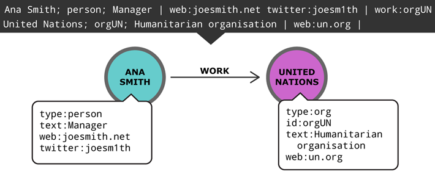

NetML is a network markup language that makes it easy to write down information as a network of nodes with properties and links.
Concept
Real-world issues are often complex and involve many stakeholders. Those dealing with the issues - such as engaged citizens, researchers and journalists - are therefore often struggling to manage and integrate the many fragments of information they find in the early phases of a investigation.
NetML is conceived to make it quick and intuitive to write down information as a network of nodes with properties and links. The combination of a single text file and a compact format makes it possible to get an overview of the information in the NetML file itself. For a more comprehensive exploration of the network, NetML files can easily be converted to a number of file formats that are accepted by most network visualization and analysis software (e.g. Graphcommons, Onodo and Gephi).
Because the NetML file is a simple text file, it can easily be shared or uploaded to a cloud service for collaboration (GitHub, Google Drive etc.)
Join the project!
This is the first release of specifications for NetML, so there are lots of exciting work ahead. If you have any comments, recommendation or would like to contribute to the development of NetML, please go to https://github.com/repmax/netml.
In parallel, a suite of tools is being developed to convert NetML to standard network formats. You can download the tools and/or contribute to their further development at the NetMaker GitHub repository: https://github.com/repmax/netmaker.
Specifications
Node, properties and links
Let’s start with an example of how to lines of text is converted into a network:
From the example above we can see that each node is defined in a single line of text and may consist of up to 3 parts separated by '|':
- Meta: name, type (optionally followed by a unique ID), text (optional description).
- Props: properties that you define.
- Links: each link will specify a type of relationship and a unique identifier of a target node.
To make a link between two nodes, the target node must have a unique identifier, so no other node is mistaken for the target. The unique ID must start with a capital letter but can otherwise be any combination of letters and numbers. Finally, the unique id is added to the type string. E.g. Weng Tonghe; person || may be assigned a unique identifier by adding "WenTon" to the type => Weng Tonghe; personWenTon ||
Commenting and bulk linking
You can write non-processed comments between lines starting with [-- and ]++. To insert a non-processed comment in a single line you can prefix it with //
It is also possible to assign a link to several nodes at a time with ##. E.g. ## wrk:orgUN will add a link to the United Nations node from all the following lines of nodes till it reaches a blank line or a comment section.
Abbreviated syntax
A NetML may optionally be accompanied by a configuration file that specifies how an abbreviated syntax should be expanded while processing.
Example of YAML configuration file:
props:
ww: 'webpage'
lo: 'location'
tw: 'twitter'
links:
wrk: 'work_for'
col: 'collaborate'
key: 'has_tag'
types:
k: 'keyword'
o: 'organisation'
b: 'business'
p: 'person'
With the convention above, the node Ana Smith; person; Manager | web:joesmith.net twitter:joesm1th | can be abbreviated to Ana Smith; p; Manager | ww:joesmith.net tw:joesm1th |
Instructions
- Create a simple text file and write down information according to the specifications above.
- Go to https://github.com/repmax/netmaker and follow the instructions to convert your text file to a network file format.
- Import the network file into your favourite network visualization and analysis software or service.